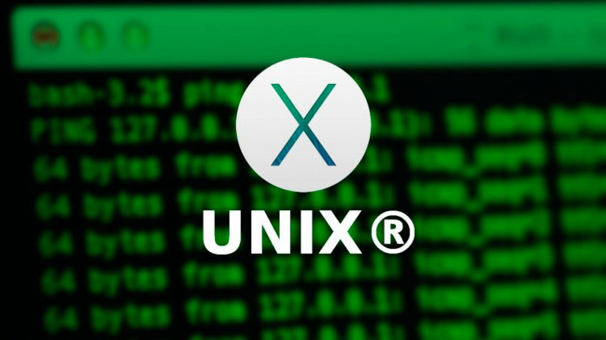

Historia

Linux es un sistema operativo de código abierto que ha revolucionado la industria tecnológica. Desde su creación, ha tenido un impacto profundo en cómo operan servidores, dispositivos móviles y otros sistemas. A diferencia de otros sistemas operativos, Linux es gratuito y está diseñado para que cualquiera pueda modificar y distribuir su código.
Partes del sistema operativo Linux
El sistema operativo Linux esta compuesto de las siguientes partes:
- Kernel.
- Proceso de arranque.
- El sistema de inicio.
- Los servicios (o daemons).
- El servidor gráfico.
- El entorno de escritorio.
- Aplicaciones.
¿Qué es el kernel?
Es la interfaz fundamental para que exista una comunicación entre el hardware del dispositivo y sus procesos. Además, en esta parte es donde se incluyen los controladores o drivers, claves para el funcionamiento del sistema.
El kernel en Linux se encarga principalmente de estas cuatro tareas:
- Gestión de la memoria: controla cuánto espacio ocupan los archivos y el sitio en el que se guarda
- Supervisión de los procesos: establece qué procesos pueden usar la CPU (unidad central de procesamiento), cuándo y cuánto tiempo
- Controladores de dispositivos: mediador entre el hardware y los diversos procesos que realizamos
- Seguridad y llamadas al sistema: recibe solicitudes de servicio de los procesos
Orígenes: Unix y Minix
Linux tiene sus raíces en Unix, un sistema operativo desarrollado en los años 60 por los investigadores Dennis Ritchie y Ken Thompson en los Laboratorios Telefónicos Bell. Unix fue revolucionario en su tiempo, proporcionando un modelo para sistemas operativos multitarea y multiusuario.
Más tarde, en la década de los 80, Andrew Tanenbaum desarrolló Minix, un sistema operativo similar a Unix con fines educativos. Minix fue diseñado para enseñar a los estudiantes los principios de diseño de un sistema operativo. Sin embargo, debido a su naturaleza académica, Tanenbaum no permitía que Minix fuera modificado, para evitar que se introdujeran complicaciones innecesarias para los estudiantes.
El Proyecto de Linus Torvalds
En 1991, un estudiante finlandés llamado Linus Torvalds decidió crear su propio sistema operativo debido a las limitaciones de Minix. Inspirado en este sistema, Torvalds comenzó a trabajar en un nuevo núcleo compatible con Unix que eventualmente llamaría Linux.
Durante este tiempo, el proyecto GNU (GNU's Not Unix), iniciado por Richard Stallman casi diez años antes, ya había desarrollado una gran parte de un sistema operativo completo, con la excepción del núcleo. El núcleo es el componente central de un sistema operativo, responsable de gestionar el hardware del sistema.
Torvalds decidió utilizar las herramientas y componentes de GNU, combinándolos con su propio núcleo, Linux, para formar un sistema operativo completo que hoy conocemos como GNU/Linux.
Primeras versiones de Linux
 Linux fue lanzado oficialmente en 1991, y su desarrollo fue anunciado inicialmente en el grupo de noticias comp.os.minix, donde los usuarios de Minix discutían la creación de un sistema operativo mejorado.
Linux fue lanzado oficialmente en 1991, y su desarrollo fue anunciado inicialmente en el grupo de noticias comp.os.minix, donde los usuarios de Minix discutían la creación de un sistema operativo mejorado.
La primera versión de Linux, 0.01, apareció en agosto de 1991, pero no fue anunciada formalmente porque no era funcional; sólo incluía los primeros conceptos del núcleo, escritos en lenguaje ensamblador. Esta versión requería un sistema Minix para poder ser compilada.
El 5 de octubre de 1991, Torvalds anunció la primera versión "oficial" de Linux, la versión 0.02, que ya podía ejecutar el intérprete de comandos Bash y el compilador gcc, aunque el sistema aún no era completamente funcional.
Crecimiento y colaboraciones
A medida que más desarrolladores se interesaron en el proyecto, el desarrollo de Linux se aceleró. Tras la versión 0.03, Linus incrementó la numeración de las versiones rápidamente, llegando a la versión 0.10. Cada vez más programadores de todo el mundo comenzaron a colaborar en el desarrollo del sistema a través de Internet.
Para marzo de 1992, el sistema había alcanzado la versión 0.95, lo que indicaba que estaba lo suficientemente estable como para considerarse cerca de una versión final. Más de un año después, en diciembre de 1993, el núcleo había alcanzado la versión 0.99, y la tan esperada versión 1.0 de Linux fue lanzada el 14 de marzo de 1994.
Desarrollo continuo
Desde su lanzamiento inicial, Linux ha seguido evolucionando rápidamente. La versión del núcleo llegó a la 2.2 y continúa avanzando, con la comunidad de desarrolladores trabajando constantemente para mejorar el sistema operativo, agregar nuevas características y perfeccionar su rendimiento.
Linux, hoy en día, es utilizado en una amplia variedad de dispositivos, desde servidores y supercomputadoras hasta teléfonos móviles, a través del sistema operativo Android, basado en Linux.
Versiones importantes
| Versión | Año de lanzamiento | Descripcion | Características |
|---|---|---|---|
| 0.01 | 1991 | Primera versión del núcleo Linux, no funcional ni ejecutable. | Concepto inicial del núcleo, dependía de Minix para su compilación. |
| 1.0 | 1994 | Primera versión estable de Linux. | Soporte para redes TCP/IP, multitarea y arquitectura i386. |
| 2.0 | 1996 | Introdujo soporte para multiprocesadores (SMP). | Soporte para múltiples CPUs (SMP), mayor compatibilidad de red y nuevas arquitecturas (Alpha, SPARC). |
| 2.4 | 2001 | Soporte para hardware moderno y nuevas tecnologías. | Soporte para USB, FireWire, sistemas de archivos ext3 y ReiserFS, y mejoras en redes. |
| 2.6 | 2003 | Soporte extenso para hardware y mejoras en rendimiento y escalabilidad. | Soporte para sistemas de archivos XFS, más de 64 GB de RAM, mejor gestión de energía, y sistemas embebidos. |
| 3.0 | 2011 | Cambio en la numeración con mejoras continuas en el soporte de hardware. | Soporte mejorado para ARM, optimización de servidores y mejor gestión de energía. |
| 4.0 | 2015 | Introducción de parches en caliente (live patching) sin necesidad de reiniciar. | Live patching, mejor rendimiento y compatibilidad de hardware (gráficos y redes). |
| 4.14 | 2017 | Versión LTS enfocada en servidores y la nube. | Soporte para 1 PB de memoria virtual, mejoras en seguridad y rendimiento en servidores. |
| 5.0 | 2019 | Mejor soporte para hardware moderno y optimización del rendimiento. | Mejoras en el soporte para ARM, dispositivos embebidos, gráficos y seguridad. |
| 5.4 | 2019 | Versión LTS con importantes mejoras de compatibilidad. | Soporte para el sistema de archivos exFAT, mejoras en gráficos (AMD, NVIDIA) y seguridad. |
| 5.10 | 2020 | Versión LTS con avances en rendimiento de CPU y virtualización. | Mejor gestión de la CPU, soporte para nuevas arquitecturas, optimización en contenedores y virtualización. |
| 6.0 | 2022 | Importante actualización con mejoras en rendimiento y eficiencia energética. | Mejor soporte para dispositivos portátiles, servidores, nuevas arquitecturas y hardware moderno. |
Referencias Bibliográficas
- Caballero, D. (2024, September 27). Qué es Linux: el sistema operativo de código abierto y gratuito. ADSLZone. https://www.adslzone.net/reportajes/software/que-es-linux/
- Fernández, A. (2017). Principios básicos de Linux y software libre. TIA Tecnología, investigación y academia, 5(2), 262-269.